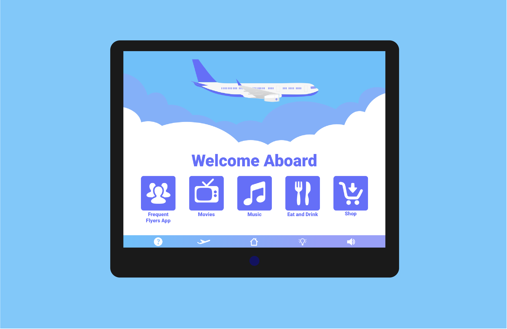

Frequent Flyers
A social computing experience prototype for passengers on a plane.
My Role
Usability Researcher
UX Designer
Prototyper
Context
4 Weeks
May 2018 - Jun 2018
Team of 5
Tools Used
Sketch
Survey Design
User Testing
Design Process
Research
User Interviews
User Observations
Competitive Analysis
Ideation
User Needs Analysis
Prototyping
Evaluation Plan
Refinement
Surveys
Iteration
User Testing
Social Setting & Opportunity
An airplane cabin is a setting where there are a lot of strangers in a confined space for a specified period of time. Whether a passenger is in first class, in business class, or economy class, there is an opportunity to create an application that helps connect passengers with rich, interpersonal communication.
Oftentimes, airplane flights are an isolating experience because people keep to themselves, conversations are kept to small talk, and an overall avoid interaction with passengers. We want to create an opportunity for complete strangers who are traveling to the same destination to communicate more easily and make an airplane flight more entertaining. Especially since space and cabin layout affects the way people can interact face-to-fact, it is an opportunity to develop a social computing experience where passengers on a flight can communicate with each other in a more meaningful way than simple chit chat.
Evaluation Plan
To evaluate our prototype, we created two Evaluation Plans (for our two iterations). The purpose of both evaluation plans was to assess the viability of our design by demonstrating our idea and getting feedback. We did so by testing our social computing device twice with a pool of 15 participants. For both sessions, we recorded the whole user testing session (prototype usage and feedback discussion), which was then used to note any observations in behavior and created user feedback forms.
Our prototypes were built using a combination of Google Form, Google MyMaps, and either Google Sheets or Google Docs. As aresult of using several Google Suite services, there was a lack of fluidity between pages/screens when testing. Through storytelling, we described our social context to our participants, and asked them to play specific roles (of visitors or locals). We provided them with detailed instructions of what to do and how to use our Minimal Viable Prototype to interact with each other through the system, and lastly created a survey to get feedback.
We were hoping to see an instructional scaffolding for local culture, points of interests, and other relevant information between local residents and visitors, and an increase in the amount of social interaction between passengers. We were looking for indicators such as the users successfully accomplishing the tasks without encountering many slips/mistakes, their positive feedback when reviewing our idea, and a successful acquisition of interesting information that wasn’t previously available. This testing helped us learn about usability issues with the functional prototype, whether we had solved our user’s needs, common slips or mistakes made, and potential risks to the project.
Prototype Version 1
Our first prototype had users input locations into a Google Form, which would then populate into a map. ‘Locals’ and ‘non locals’ jointly collaborate and brainstorm points of interest in the destination city. ‘Passengers’ would fill out as many locations through the form and our team acted as the backend to input those destinations into Google Maps to have a collective map of all places that were inputted. Users were then able to comment and edit on those points of interest in order to interact with other passengers and get feedback.
From our in-class prototyping, we were able to distinguish both pros and cons in our tool. Our process and idea did seem to stand out from other groups, giving our idea an unique edge, and the MyMaps was a favored feature of the prototype. However, users were mainly examining the tool rather than interacting with it and engaging with others. Additionally, we found that there was a lack of motivation on the users’ end to use the tool -- especially for ‘local’ users. Locals had little to no motivation to want to engage with the application. Thus, we need to iterate on our prototype to be more engaging for users. We wanted passengers to interact with each other, but this requires them to use it in the first place.
Prototype Version 2
To combat the motivation problem our first prototype had, we created a Buzzfeed-styled quiz. Passengers would take the quiz to find what kind of traveler they were. Based on a users preference to certain pictures of food, places, hotels, etc the quiz result outputted an ‘ideal itinerary’ for that user’s responses. They were then brought to a map that displayed their (and other travelers') preplanned itinerearies. Different colored pins represented different itineraries. In the chat room, passengers would be able to coordinate travel plans or start casual conversation about the destination they’re headed to.The chatroom was simulated wtih a GoogleDoc.
Overall, our feedback from our second prototype was more positive than our previous version. Users found our prototype to be more fun and more simple in our second trial, and the BuzzFeed quiz was a success. One user said, “I enjoyed how you used pictures and the [BuzzFeed] quiz. I liked seeing the different foods and places, all while it being very informative.” While prototyping, we observed users smiling and chuckling when opening up the quiz which we interpreted as a sign that they found the quiz enjoyable to some degree. Users did suggest having more options available on the map and allowing users to edit their itinerary. Additionally, users wanted the tool to suggest passengers to connect with based on mutual points of interest and other conversation starters-all which our team would hypothetically look forward to in our next iteration.
Prototype UI
UI mockups were created to establish a stronger connection between the experience and the prototype usage.
Inflight Entertainment home screen
Quiz screen
Map screen
Chatroom screen
Prototype Reflection
Prototyping revealed that the airplane cabin is very promising social context for creating a social computing application. From our research, we found that people who are flying on an airplane always have a good experience talking with other passengers. However, it was difficult for them to communicate with others due to physical and social barriers. For example, the loud engine noise makes it difficult to hear another person talk, people generally keep to themselves, especially if others are on their mobile phone. So, the airplane cabin social setting is a prime opportunity for some sort of social computing application that facilitates communication between passengers.
However, there are some complexities that should be taken into consideration when further developing this social computing experience. First, how does the length of the flight affect people’s behaviors and their usage of the application? Passenger behavior on a short 2-hour domestic flight is different from a 15-hour international flight. A midday flight is different from a red-eye flight. As a result, our prototype should be adaptable to flight length (e.g. some indicator delineating how much time is left on the flight so users can time their chats based on that information) and time of day for the flight (e.g. many people want to sleep during red-eye flights, so the application is better suited for the end of the flight than the beginning of the flight). Second, there are physical limitations to the inflight entertainment screen sizes. Not all airplanes have them. Additionally, these screens tend to be quite small and the cabin tends to be shaky, so staring at this screen to use the application may be uncomfortable for people. So, the prototype screens should have minimal text and clutter, optimizing the screen for usability.
Overall, the prototype shows promise in becoming an actual application. There are a lot of small details that need to be ironed out, and the entire user experience is something that needs to be prototyped and tested more.